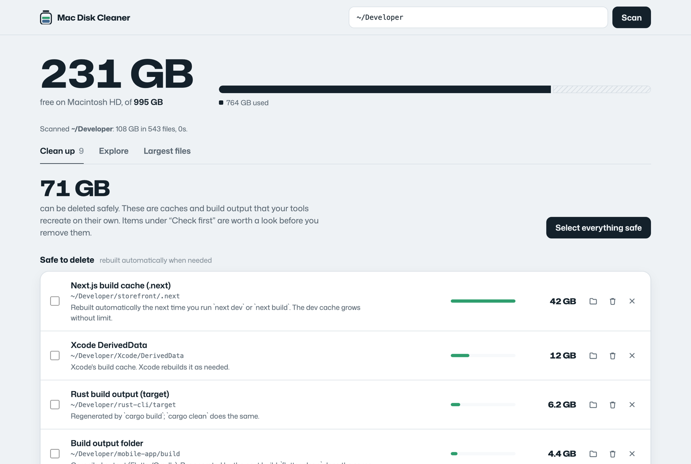
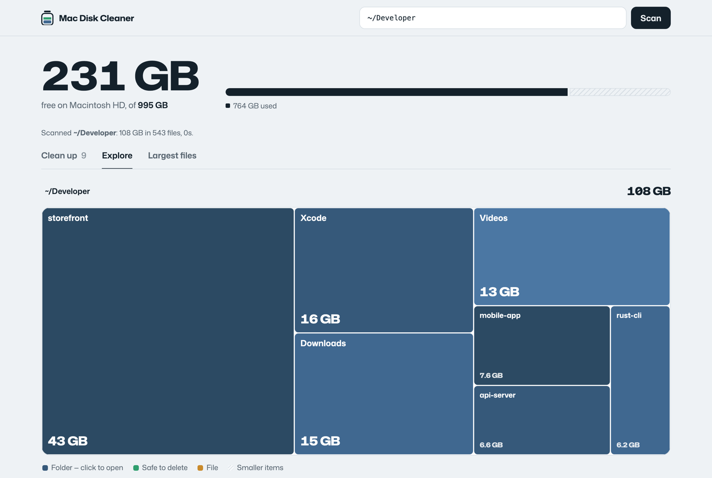

Mac Disk Cleaner is a free, open-source app that maps every folder on your MacBook, finds the hidden caches and build leftovers eating your storage, and deletes them safely. No account, no subscription, nothing leaves your Mac.
$brew install openstruct/tap/mac-disk-cleaner && mac-disk-cleanerPaste into Terminal. No Homebrew? git clone https://github.com/OpenStruct/mac-disk-cleaner.git && python3 mac-disk-cleaner/diskclean.py works too. macOS 12 or later, Intel or Apple silicon. MIT licensed.
Scan, spot the 42 GB cache in the treemap, select everything safe, and delete it. This is the real app running on a demo folder, with narration. Turn your sound on.
Finder doesn't show dot-folders, and macOS files most of this under “Documents” or “System Data”. Mac Disk Cleaner recognises each one, tells you what recreates it, and sorts it into safe, check first, or clean with a command.
.next, .nuxt, .svelte-kit, .turbo, Flutter build, Rust target. A Next.js dev cache alone can pass 150 GB.
node_modules, CocoaPods Pods, .dart_tool, Gradle project caches, in every project you've ever cloned.
DerivedData and iOS DeviceSupport (often 50 GB+), plus Archives and Simulators flagged for a quick check.
safenpm, Gradle, Go, pip, pub, and app caches in ~/Library/Caches, re-downloaded only when needed.
Images, containers and volumes inside Docker.raw. You get the right docker system prune command instead of a broken install.
LM Studio and Hugging Face models, Android system images, Python venvs, old agent worktrees, the biggest videos in Downloads.
check firstEverything is listed with its full path and size before anything is removed. Move it to the Trash if you're unsure, or delete caches permanently to get the space back immediately.


A tiny local server on 127.0.0.1. No network requests, no analytics, no account. Every request needs a token created at launch.
Core folders, keychains, iCloud Drive, Mail, Messages, Photos libraries, Docker's data and .git folders are always refused.
Each item says what it is and what rebuilds it, so you know why it's safe before you delete it.
One Python file and one HTML file, no dependencies, MIT licensed. Audit it in an afternoon.
macOS counts any file in your home folder that isn't an app, photo, music or mail as “Documents”. That includes hidden folders like .next, node_modules, Xcode DerivedData and package caches, which Finder doesn't show. Mac Disk Cleaner scans them and adds up their real size, so a 403 GB mystery becomes a list of folders with names.
Yes. npm install recreates node_modules, your next build recreates .next, and Xcode recreates DerivedData. The app marks these as safe, and marks anything that might hold your own work (archives, models, virtual environments) as check first.
Pick one that shows you the exact folder and size before deleting, explains why each item is safe, and doesn't ask for a subscription. Mac Disk Cleaner is free and open source, runs entirely on your Mac, and never removes anything you haven't seen listed.
A lot of what macOS calls System Data lives in your Library folder: caches, Xcode device support, simulators and Docker's disk image. Mac Disk Cleaner finds all of those. It doesn't touch system files outside your home folder or local Time Machine snapshots.
Items in the Trash still use disk space until it's emptied. Use “Delete permanently” for caches, or the Empty Trash button in the app.
Yes, on any Mac with macOS 12 or later, Intel or Apple silicon. It uses the python3 that comes with macOS; the first run may offer to install Apple's Command Line Tools.
$brew install openstruct/tap/mac-disk-cleaner && mac-disk-cleaner